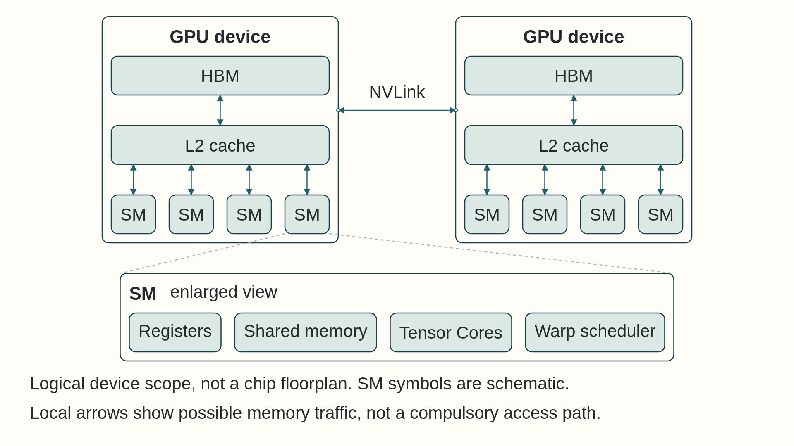

3 GPU hardware and memory
A GPU can spend time waiting when too little parallel work is ready or when data cannot reach its arithmetic units quickly enough. This chapter follows tensors from registers and shared memory through L2 and HBM, then across links between GPUs and servers, so later optimizations can be tied to the hardware resource they use.
A CPU is built to respond quickly to a small number of changing instruction streams. Its large caches, branch prediction, and complex cores suit request parsing, tokenization, and the control work that decides what to launch next. A GPU puts more of its chip into arithmetic units and hardware scheduling of many threads (independent instruction sequences working on separate data). It can finish many similar operations per second when a batch supplies enough independent work and nearby threads read nearby data.
This division is visible in a model step. The CPU prepares inputs and submits GPU work; the GPU performs wide tensor operations such as matrix multiplication. Moving a tiny or branch-heavy task to the GPU can add launch and transfer time without enough parallel work to repay it. Conversely, running a large regular matrix operation on a few CPU cores leaves GPU throughput unused. The choice depends on work size, data location, and the time to move or launch it, not on which processor is universally faster.
A GPU combines device-wide memory and cache with many Streaming Multiprocessors (SMs) (the GPU’s independent processing units, Section 3.1), each containing local execution and storage resources.

High Bandwidth Memory (HBM) and the L2 cache (an on-chip cache shared by all SMs) serve the whole device. Registers, shared memory, warp scheduling (an SM issuing instructions from ready groups of 32 threads while other groups wait), and Tensor Cores belong inside an SM. The second device makes the boundary explicit: NVLink (NVIDIA’s direct GPU-to-GPU link) carries peer traffic between GPUs rather than connecting an SM directly to another device’s cache.
This chapter supplies the hardware facts behind two changes from the short key in Section 2.2: move fewer bytes by reusing values in faster memory, and use suitable arithmetic units by matching the shapes and formats they support. The full catalog follows the first measurement in trace interpretation.
3.1 GPU chip structure
GPU chip structure is the organization of execution units, on-chip storage (memory built into the GPU chip itself), caches, and off-chip memory that a kernel uses while it runs. Computation happens in execution units, while data is staged and reused through several storage levels with different scopes and costs.
GPU performance depends on registers, per-block shared memory, hardware-managed caches, High Bandwidth Memory (HBM), and external interconnects. Each level differs in scope, capacity, lifetime, and how software influences placement or reuse.
The storage levels are not one compulsory path for every access: instructions, caches, shared-memory staging, and interconnect traffic depend on the operation and kernel.
A Streaming Multiprocessor (SM) is a GPU execution unit with a finite pool of registers, shared memory, scheduling slots, and arithmetic resources. The CPU launches a kernel, a GPU function executed by many logical threads. Its launch groups those threads into blocks, whose threads can share on-chip storage and synchronize. In the baseline CUDA execution model, each block executes on one SM, and several blocks can reside there together if resources permit. A warp is a scheduling group of 32 threads within a block on the NVIDIA GPUs described by the CUDA C++ Programming Guide 12.4. The SM schedules these warps, while L2 and HBM serve the whole device.1 Chapter 4 develops indexing and scheduling in detail.
One word, four meanings: block
Thread block: the group of threads that a kernel launch creates together, which shares on-chip memory and can synchronize. This is the meaning used here and in Section 4.2.
Block of data, also called a tile: the rectangular piece of a tensor that one Triton program instance loads and computes, sized by constants such as BLOCK_SIZE (Section 5.3). It names a piece of data, not a group of threads.
Transformer block: one layer of the model, meaning its attention and feed-forward sub-layers together (Section 1.1).
KV-cache block: the fixed number of token positions whose keys and values are stored in one allocation (Section 12.5). It names a unit of memory management.
The subject under discussion decides which one is meant.
Resident blocks and occupancy
Registers are used by individual threads, but all resident threads draw from the SM’s finite register capacity. Shared memory is allocated per block, but all resident blocks draw from the SM’s shared-memory capacity. Admission must satisfy both limits together, as well as the device’s block and thread limits.
occupancy is the ratio of resident active warps on an SM to its maximum supported resident warps. High occupancy can hide latency, but it does not guarantee high throughput when memory access, instruction mix, or dependencies are poor.
The chip structure matters because every kernel consumes scarce per-SM resources: registers, shared memory, scheduler slots, and memory bandwidth. A kernel with too many registers per thread may reduce the number of active warps. A kernel with too much shared memory per block may reduce how many blocks can reside on an SM. A kernel with poor memory locality can keep arithmetic units idle even when many threads are present.
3.2 Memory hierarchy
GPU memory is not one uniform pool. Performance depends on which level serves the data, who can see it, and how directly the programmer can control it.
- Registers: Fastest storage, private to one thread, and used for scalar temporaries and small per-thread fragments. Register pressure (a kernel’s demand on the finite register file) can reduce occupancy because each Streaming Multiprocessor (SM) has a finite register file.
- Shared memory: On-chip memory shared by threads in one block, also called a Cooperative Thread Array (CTA). It is explicitly managed and useful for tiled reuse, but capacity is small. A shared-memory bank is one independently served group of locations. Requests by threads in one warp to different addresses in the same bank can require extra transactions, a bank conflict. Requests to the same address can be broadcast.
- L2 cache: Device-wide cache shared across SMs. It can capture cross-SM or cross-kernel locality, but programmers usually control it indirectly through access patterns and kernel choices rather than direct allocation.
- High Bandwidth Memory (HBM): Large off-chip GPU memory that stores model weights, activations, gradients, optimizer state, and KV cache. Its bandwidth is high in absolute terms, but it is still much slower than on-chip storage.
- Host memory and interconnect: CPU memory reached over PCIe (the standard expansion bus that connects GPUs, network cards, and other devices to the CPU) or another system path. Transfers are much slower than on-device reuse, so repeated host/device movement in frequently executed code is usually wasteful.
Memory-tier caveat
The phrase ‘GPU memory’ hides large cost differences among registers, shared memory, L2, HBM, and host transfers. A kernel can fit in HBM and still be slow because it fails to reuse data closer to the SM.
| Level | Scope | Engineering role | Main risk |
|---|---|---|---|
| Registers | Thread | Fast scalar and vector temporaries | Too many registers reduce occupancy |
| Shared memory | Block / CTA | Tile reuse and cooperative staging | Bank conflicts or capacity pressure |
| L2 cache | Device | Cross-SM reuse and caching | Limited control and eviction |
| HBM | Device | Large tensor storage | Bandwidth and latency dominate if reuse is poor |
| Host / interconnect | System or cluster | Data loading and multi-GPU movement | Transfer latency and bandwidth |
GPU caches are hardware-managed storage between Streaming Multiprocessors and HBM. CUDA memory spaces such as registers, shared memory, global memory, and constant memory expose explicit placement choices. Ordinary L1 and L2 cache residency mostly follows access pattern, instruction choice, and hardware replacement policy.
The per-SM L1 or unified data cache is closest to executing warps. It can reduce latency for repeated or nearby accesses inside work scheduled on the same SM. Cross-SM reuse belongs mainly to the device-wide L2 cache, which sits between kernel load/store traffic and HBM. L2 can capture reuse across SMs or across nearby kernel launches, while remaining much smaller than model weights, activations, or long KV-cache state.
A cache line holds a fixed-size, aligned region of memory together with information identifying its address. The cache’s address-mapping rule assigns each line to a set, the group of candidate locations where it may be kept. Each location in that set is a way. Associativity is the number of ways per set. If more needed lines map to one set than it has ways, one must be evicted even when another set has free space. Returning to the evicted line produces a conflict miss. Exact NVIDIA GPU set mapping and replacement behavior are architecture-specific, not a stable CUDA programming contract.
In an illustrative two-set cache, three lines mapping to one two-way set can evict each other while the other set stays empty. Changing addresses can restore reuse. The mapping and replacement rule in the example are teaching assumptions, not an NVIDIA cache specification. A real layout change needs profiler evidence.
Example: Free capacity with repeated cache misses
Consider a hypothetical cache with two sets and two ways per set, initially empty. Let the set be line_number mod 2, and let replacement evict the least recently used line. Accessing lines 0, 2, 4, 0 sends every access to set 0. Line 0 misses and occupies one way. Line 2 misses and fills the other. Line 4 misses and evicts line 0. The final access to line 0 misses again and evicts line 2. Set 1 remains empty throughout, despite these evictions. If a changed layout places the third item in line 5 instead, accesses 0, 2, 5, 0 put line 5 in set 1, and the final access to line 0 hits. This illustrates how addresses can change reuse without changing the number of items. The modulo mapping and replacement rule are teaching assumptions, not an NVIDIA cache specification. Actual layout changes need profiler evidence.
The practical optimization question is therefore not ‘which cache set owns this tensor?’ The useful questions are whether neighboring threads within a warp access adjacent addresses, whether the working set fits within the level that should reuse it, whether a stride pattern repeatedly fights for the same limited cache resources, how many cache sectors (fixed-size units of cache traffic, defined below) are requested, how many requests miss to L2 or HBM, and whether reused data should be staged explicitly in shared memory or registers.
- L1 or unified data cache: Per-SM cache path for local load/store traffic. It helps locality inside work scheduled on the same SM, but it is not a general cross-SM state store.
- L2 cache: Device-wide cache shared by SMs. It is the main hardware cache level to discuss for cross-SM global-memory locality and L2 persistence controls.
- Cache sector: Profiler-visible access granularity. Nsight Compute reports sectors as 32-byte chunks, with four sectors in a 128-byte L1 or L2 cache line on documented NVIDIA profiling views.
- Associativity: The ways-per-set limit just illustrated. It matters when address layout or stride creates conflict misses even though total cache capacity seems sufficient.
- Cache control boundaries: The hardware limits direct placement, but provides specific controls:
cudaFuncSetCacheConfig: Requests a preferred L1/shared-memory split on supported devices.- L2 persistence window: Gives selected accesses preferential retention across kernel launches within the supported cache limits.
- PTX eviction hints: Give streaming data a lower retention priority to reduce interference with reused lines. They do not guarantee that reused data remains cached.2
- Profiler-counter proof: Verifies hit rates to confirm cache effectiveness. None of these controls assigns an arbitrary tensor to a cache set or pins an ordinary cache line.
L2 cache hit rates (the fraction of requests found in the cache) can drop if strides repeatedly map different addresses to the same cache sets. This is an associativity or conflict miss. Reorganizing the layout or padding the dimension can reduce these misses, though the exact hardware hash function is not documented.
Cache controls help only when the access pattern creates reuse and profiler counters show that the hardware retains it. They cannot repair scattered accesses or force exact residency. Once operands reach an SM, the next question is whether their shapes and data types let Tensor Cores perform the arithmetic efficiently.
3.3 Tensor cores and shape alignment
Tensor Cores are specialized Matrix Multiply-Accumulate (MMA) units inside Streaming Multiprocessor partitions. They consume supported matrix tiles at very high throughput. One H100 SXM configuration has 132 SMs and four fourth-generation Tensor Cores per SM, but exact counts and available throughput depend on the GPU variant and enabled chip resources. This configuration is documented in NVIDIA Hopper Architecture In-Depth.3
Multiply-accumulate means multiplying corresponding operand values and adding the products into a running result. For a matrix tile, an operand of shape \(m\times k\) multiplies one of shape \(k\times n\) and adds into an \(m\times n\) accumulator. The result has \(m\) rows and \(n\) columns. Here \(k\) is the shared dimension over which products are summed, not a third output axis. A tile described as \(m\times n\times k=16\times16\times16\) therefore consumes two \(16\times16\) operand tiles and updates a \(16\times16\) result. Exact supported instruction shapes depend on architecture, dtype, and kernel path.4
Padding a shared matrix dimension with zeros can let a tiled calculation cover a remainder without changing the result. The toy 2-by-2 tile raises the multiply-add count from 12 to 16. It is not a Tensor Core instruction, and a kernel could handle the remainder separately.
Example: Padding a reduction dimension
Take \(A\) with rows [1,2,3] and [4,5,6], and \(B\) with rows [1,0], [0,1], and [1,1]. Their shapes are \(2\times3\) and \(3\times2\), so the output has shape \(2\times2\). With a zero starting accumulator, its upper-left value is \(1\times1+2\times0+3\times1=4\).
For an illustrative software tile with \(m=n=k=2\), the first two positions of the shared dimension contribute rows [1,2], [4,5]. The remaining position contributes [3,3], [6,6]. Padding \(A\) with a zero fourth column and \(B\) with a zero fourth row lets that second tile process two positions: its added zero products leave the result unchanged. Summing the two contributions gives output rows [4,5] and [10,11]. All four output entries are retained. The padded calculation performs 16 multiply-add pairs instead of 12, so easier tiling comes with extra work. This small software tile illustrates the arithmetic, not an available Tensor Core instruction. A kernel can also handle the remainder separately. Actual speed depends on the selected implementation.
This is why hidden sizes, head dimensions, batch shapes, and padding can affect performance. Padding may increase nominal arithmetic while improving utilization on a suitable Tensor Core path. Section 4.7 develops the full GEMM shape relation.
In modern transformer GEMM, ‘compute-bound’ (Section 6.2) often means ‘tensor-core-bound’: the useful question is whether the operation reaches the specialized matrix units efficiently. Verify this in traces rather than assuming it. Nsight Systems kernel names, Nsight Compute instruction metrics, and achieved tensor-core utilization can show whether the intended path was actually used.
Shape alignment depends on the library path and GPU architecture as well as the mathematical matrix dimensions. NVIDIA’s matrix-multiplication guidance reports that modern cuBLAS and cuDNN can often use Tensor Cores even when dimensions are imperfectly aligned, while efficiency improves when the fastest-varying matrix dimensions align to hardware-friendly byte multiples. For FP16, a common practical rule is to prefer multiples of 8 elements, with larger multiples often helping on A100-class paths. Exact requirements vary by CUDA library version, dtype, layout, and GPU generation. See Matrix Multiplication Background User’s Guide.5
A poorly aligned matrix shape can trigger internal padding, a less efficient tile path, a different kernel, or Tensor Core execution with lower utilization. A trace relates the actual kernel path, achieved utilization, and tensor dimensions.
Tensor Cores execute supported matrix multiply-accumulate instructions on small hardware fragments. Kernels combine those fragments into warp-, block-, and software-level tiles that can be much larger than one instruction. Alignment and remainder handling can affect utilization, while exact instruction shapes and Tensor Core counts depend on GPU architecture, dtype, and GPU variant.
Tensor Core speed requires a supported numerical format and an execution path that selects the accelerated kernel. Suitable dimension alignment can improve efficiency without being a universal requirement for Tensor Core use. When an operation spans several GPUs, the next question is whether the local interconnect can move partial results quickly enough to preserve that compute gain.
3.4 Intra-node interconnects
The earlier sections described one GPU’s execution and memory hierarchy. Scaling starts when tensors move between GPUs in one server or between servers in a cluster. A GPU is one execution device. A board or accelerator card packages one or more GPUs and their local HBM. A node, also called a server, contains CPUs, host memory, PCIe attachment paths, network interface cards, and one or more GPU boards. Intra-node traffic stays inside one server. Inter-node traffic crosses the cluster network between servers.
Intra-node topology starts before GPU-to-GPU links. Multi-socket servers often have Non-Uniform Memory Access (NUMA): CPU cores, host memory channels, PCIe attachments, GPUs, and Network Interface Cards (NICs) (the devices that connect a server to the cluster network) are closer to some sockets than others. A process placed on the wrong CPU socket can feed a nearby-looking GPU through a slower path.
Software placement determines which of these paths carries an input batch. A process is a running operating-system program instance. A rank is its integer identity within a distributed group, not a GPU. Selecting a GPU device chooses where that process submits device work. CPU affinity restricts which CPU cores may run the process, while host-memory placement is a separate NUMA policy. Optional data-loading workers are helper processes that prepare batches for the training process. They do not automatically acquire distributed ranks or their own GPUs.
Example: Two ranks feeding two local GPUs
Assume one server with two CPU sockets, GPU 0 attached near socket 0 and GPU 1 near socket 1, and one training process per GPU. Process P0 has rank 0, CPU affinity on socket 0, and selects GPU 0. P1 has rank 1, runs on socket 1, and selects GPU 1. These rank-to-device matches are explicit choices in this example. Other mappings are possible.
For P1, optional loader workers prepare a batch using CPU cores and host memory placed near socket 1. P1 submits its input copy through the GPU’s local PCIe path into GPU 1’s HBM, then launches work on that data. If the batch’s host pages are instead on socket 0, the copy may also cross the inter-socket link. CPU affinity alone does not move those pages or select GPU 1. Local placement can reduce this extra traffic, but its effect needs measurement. Chapter 16 and Chapter 17 extend this setup to communication groups and multiple servers.
PCIe connects GPUs to the host and sometimes to each other, but it is much slower than on-package or board-level GPU interconnects. NVLink provides higher bandwidth GPU-to-GPU communication inside a node. NVSwitch (a switch chip that joins many NVLink GPUs) extends this idea to many GPUs. These fabrics matter for tensor parallelism and frequent collectives.
Table 3.2 identifies the scope of each transfer rate. Its rows are not one comparable scale: HBM is per GPU, while peer links and network rates depend on direction, route, port count, and topology. Use a named hardware specification or a measured path before inserting a rate into a transfer-time estimate. Check whether a vendor NVLink specification combines both directions or multiple links before using it as a one-pair, one-direction rate, as NVIDIA’s Hopper tuning guide does for its GPU-wide figure. NIC port speeds are often reported in Gb/s (gigabits per second); divide by 8 for GB/s (gigabytes per second), then compare that peak with measured payload throughput.
| Path | Transfer scope | Rate to identify | How to use the rate |
|---|---|---|---|
| HBM | One GPU’s HBM | Specified per-GPU HBM peak and achieved bandwidth over the same kernel | Compare with bytes crossing HBM in a local-kernel roofline. |
| NVLink / NVSwitch | Named GPU pair or switch route, per direction | Vendor peak and measured peer rate for that pair and direction | Measure peer or collective traffic and overlap on that route. |
| PCIe | Negotiated host-device or peer path, per direction | Negotiated link width and generation per direction, then achieved copy rate | Include repeated hot-loop copies in the measured step. |
| InfiniBand / RoCE | Named NIC port or aggregate node route, per direction | Vendor port bit rate per direction (Gb/s divided by 8 for GB/s), then measured payload rate | Confirm selected NIC, transport, and contention before estimating scale-out time. |
3.5 Interconnect hierarchy beyond HBM
An interconnect is the path used to move data between processors, accelerators, host memory, network cards, or nodes. After data leaves HBM or one GPU, the cost model changes: bandwidth usually drops, latency rises, and synchronization becomes more visible.
Moving a host batch to the GPU also depends on its memory type. Pageable memory is ordinary host memory whose physical pages the operating system may move or page out. Pinned memory is host memory held in place for transfers. Direct Memory Access (DMA) lets a device move the payload without the CPU copying each byte. On a pageable host-to-GPU route, the runtime may first copy the payload with the CPU into a pinned staging buffer. A copy engine then transfers it to HBM. Starting from a pinned buffer can remove that staging copy. The CPU still allocates buffers and submits work, and dependent computation must wait for transfer completion. Pinning consumes host resources and does not itself prove overlap. Section 4.3 gives the CUDA lifecycle.6
Remote DMA (RDMA) lets network hardware transfer data to or from registered memory on another machine, with software setting up the accessible buffers and communication. GPUDirect RDMA extends the direct path to compatible GPU memory: the NIC can access HBM through PCIe, avoiding an intermediate host payload buffer. A staged GPU-to-network path copies from HBM to host memory before the NIC sends the bytes. A supported direct path transfers between the NIC and HBM. CPU coordination and completion ordering remain necessary. Compatible devices, drivers, memory registration, and topology determine whether this path works, as described in the NVIDIA GPUDirect RDMA documentation. Section 16.7 develops those network conditions.
PCIe joins hosts and devices, while NVLink and NVSwitch connect supported GPUs within a server. A NIC is the network card that connects a node to other nodes. InfiniBand is a high-performance cluster fabric. RoCE carries RDMA over Converged Ethernet, while Ethernet is a general-purpose network fabric.
- PCIe: General host/device expansion bus for CPUs, GPUs, NICs, and other devices.
- NVLink: High-bandwidth GPU-to-GPU link available only on supported systems and topologies.
- NVSwitch: Switch fabric that connects multiple NVLink-capable GPUs inside a server or platform.
- NIC: Network Interface Card, the device that connects a node to the cluster network.
- InfiniBand: High-performance cluster fabric commonly used for multi-node GPU training and serving.
- RoCE: RDMA over Converged Ethernet. Performance depends strongly on Ethernet fabric configuration.
- Ethernet: General-purpose network fabric. It is ubiquitous, but unoptimized paths are often weak for frequent GPU collectives.
After HBM, the next distance is usually another GPU or another node. Moving tensors across PCIe, NVLink, NVSwitch, InfiniBand, RoCE, or Ethernet is far more expensive than reading registers or shared memory. Distributed training and distributed inference therefore add explicit communication costs and synchronization points to the single-GPU execution model.
Each memory or communication path is a separate measured resource. Register and shared-memory reuse usually avoids slower device-memory traffic. An HBM load uses the GPU memory controllers. A peer transfer (a direct copy between two GPUs) uses NVLink, NVSwitch, or PCIe. A cross-node transfer adds a NIC and network fabric. Their relative cost depends on message size, topology, contention, and overlap, so the selected path, effective bandwidth, and latency require measurement.
The performance mistake is to treat every transfer as the same kind of HBM traffic. A kernel reading its own tensor, a host batch copied into GPU memory, a peer GPU copy, and a cross-node collective all move bytes, but they use different software owners and hardware paths.
Copy engines and caches solve different movement problems. A copy engine is used for explicit transfer work, such as host-device copies or some device-device copies. The cache hierarchy serves ordinary kernel load/store instructions as warps read and write tensors. A slow trace can involve both: a batch might first move through a DMA copy path into HBM, then a kernel might waste HBM bandwidth because its warp loads miss cache or access scattered sectors.
Transfer design principles
Pinned-memory staging: Use page-locked host buffers when repeated host-to-device copies need efficient DMA and possible overlap.
Compute near data: Run the operation where the tensor already lives instead of moving the tensor to a more convenient but distant processor.
Direct path validation: Confirm that a peer, NVLink/NVSwitch, or RDMA path is actually available before assuming the fast route exists.
Distance and transfer cost: Frequent latency-sensitive transfers usually benefit from a nearby, fast path. Placement also depends on message volume, link latency and bandwidth, and the transfer time left exposed after overlap, not frequency alone (Section 17.4).
After a trace identifies a transfer, Table 3.3 answers a different question: which software submitted it, which physical route likely carried it, and what evidence can distinguish a direct path from staging or fallback.
| Path | Typical owner | Hardware route | What to verify |
|---|---|---|---|
| Kernel HBM access | Kernel code, vendor library, Triton, TorchInductor | SM load/store through L2 and HBM controllers | Uncoalesced access or poor reuse wastes HBM bandwidth |
| Host to GPU | PyTorch tensor placement, CUDA runtime | Pinned/pageable host memory through PCIe or similar host path | Pageable staging, NUMA mismatch, hidden synchronization |
| GPU to GPU | CUDA peer copy, NCCL, distributed framework | NVLink, NVSwitch, or PCIe peer path | Peer access unavailable, topology asymmetry, host bounce |
| GPU to network | NCCL, MPI, NIC driver | NIC/RDMA path through InfiniBand, RoCE, or Ethernet | Wrong NIC, no GPUDirect RDMA, congestion, rank skew |
A profiler timeline can show copy operations, kernel execution and, with suitable instrumentation, network activity or unified-memory migration. Ordinary kernel load/store traffic is part of kernel execution and needs memory counters; it is not itself a copy span. Identifying the event type and physical route determines which change can affect it.
3.6 GPU memory capacity and placement
VRAM means the GPU device-memory capacity available for tensors, model weights, activations, workspaces, and caches. On the datacenter GPUs discussed in this module, that device memory is High Bandwidth Memory (HBM).
For many current LLMs, one device cannot hold the weights at the desired precision together with KV cache, activations, temporary workspaces, and allocator headroom. The raw weight byte count and the workload-specific state together determine whether quantization, sharding, or offload is needed. Table 3.4 compares specific GPU variants because capacity and bandwidth depend on that choice. The Tesla P100 SXM2 16 GB row uses the Tesla P100 Datasheet7, the Tesla V100 SXM2 32 GB row uses the Tesla V100 Datasheet8, the A100 80 GB SXM row uses the NVIDIA A100 specifications9, the H100 SXM5 80 GB row uses the NVIDIA H100 product specifications10, and the B200 row derives per-GPU values from the NVIDIA DGX B200 system totals11.
| Example GPU | VRAM capacity | Peak bandwidth | Example model scale | Weight storage and remaining memory |
|---|---|---|---|---|
| Tesla P100 SXM2 16 GB (GP100 / Pascal) | 16 GB (HBM2) | 732 GB/s | BERT-Large (~340M parameters) | FP16 weights are about 0.68 GB; BERT-Large is a small model by current LLM-serving scale |
| Tesla V100 SXM2 32 GB (GV100 / Volta) | 32 GB (HBM2) | 900 GB/s | GPT-2 (~1.5B parameters) | Fits in a single GPU; requires ~3 GB in FP16, leaving room for activations |
| A100 80 GB SXM (GA100 / Ampere) | 80 GB (HBM2e) | 2.0 TB/s | GPT-3 (~175B parameters) | FP16 weights (~350 GB) require multi-GPU sharding. Crossing nodes depends on GPUs and usable memory per server plus workload headroom |
| H100 SXM5 80 GB (GH100 / Hopper) | 80 GB (HBM3) | 3.35 TB/s | Llama 3-70B (~70B parameters) | FP16 weights need two or more GPUs. Raw FP8 weights can fit one 80 GB GPU only with an explicit KV-cache and workspace budget; INT4 leaves more headroom |
| B200 (DGX B200 / Blackwell, HBM3e) | 180 GB (HBM3e) | 8.0 TB/s | Llama 3-405B (~405B parameters) | GPU-resident FP16/BF16 weights occupy about 810 GB and require several B200 GPUs. An eight-GPU DGX B200 is one deployment configuration; the required count depends on supported weight precision and the KV-cache/workspace budget. Offload is a separate placement option. |
The model-size column shows when weights alone exceed one GPU. That calls for a placement plan across GPUs, but it does not by itself call for another server. Check the memory available on each GPU after its share of weights, cache, activations, and workspace. Only after checking the GPUs and links inside one server can a capacity or communication decision require a second server. Aggregate capacity is not one shared allocation pool.
References
NVIDIA. (2024). CUDA C++ Programming Guide 12.4. CUDA 12.4 programming guide (release 2024-03-05). Support: thread hierarchy, warps of 32 threads, memory hierarchy, streams, events, and coalesced access guidance used in Sections 2.2 and 2.3. Limit: exact SM counts, cache sizes, and bandwidths are architecture specific and are cited separately where stated.↩︎
NVIDIA. (2024). Parallel Thread Execution ISA 8.4, sections 9.7.8.1-9.7.8.2. Cache operators and eviction priority hints. Cache and eviction policies are performance hints, not guarantees of residency or memory ordering.↩︎
Andersch, M., Palmer, G., Krashinsky, R., Stam, N., Mehta, V., Brito, G., & Ramaswamy, S. (2022). NVIDIA Hopper Architecture In-Depth (NVIDIA Technical Blog, 2022-03-22). NVIDIA Hopper architecture article . Support: H100 SXM5 has 132 SMs with 4 fourth-generation Tensor Cores per SM; full GH100 has 144 SMs; HBM3 memory and 50 MB L2 cache configuration. Limit: counts describe the stated SXM5 configuration; PCIe and NVL variants differ and exact throughput depends on clocks and enabled resources.↩︎
NVIDIA. (2023). Matrix Multiplication Background User’s Guide (last updated 2023-02-01). NVIDIA matrix multiplication guide. Support: Tensor Core use with cuBLAS 11.0 and cuDNN 7.6.3 and later without strict alignment, with best efficiency for FP16 at multiples of 8 elements and larger multiples on A100 paths. Limit: only the fastest-varying dimensions must obey the rule and exact behavior varies by library version, dtype, layout, and architecture.↩︎
NVIDIA. (2023). Matrix Multiplication Background User’s Guide (last updated 2023-02-01). NVIDIA matrix multiplication guide. Support: Tensor Core use with cuBLAS 11.0 and cuDNN 7.6.3 and later without strict alignment, with best efficiency for FP16 at multiples of 8 elements and larger multiples on A100 paths. Limit: only the fastest-varying dimensions must obey the rule and exact behavior varies by library version, dtype, layout, and architecture.↩︎
NVIDIA. (2024). CUDA C++ Programming Guide 12.4. CUDA 12.4 programming guide (release 2024-03-05). Support: thread hierarchy, warps of 32 threads, memory hierarchy, streams, events, and coalesced access guidance used in Sections 2.2 and 2.3. Limit: exact SM counts, cache sizes, and bandwidths are architecture specific and are cited separately where stated.↩︎
NVIDIA. (2016). Tesla P100 Datasheet. Tesla P100 datasheet (PDF). Support: SPECIFICATIONS table lists Tesla P100 SXM2 with 16 GB CoWoS HBM2 and 732 GB/s memory bandwidth. Limit: the PCIe 12 GB variant provides 549 GB/s, so the table row names the SXM2 16 GB variant explicitly.↩︎
NVIDIA. (2018). Tesla V100 Datasheet. Tesla V100 datasheet (PDF). Support: SPECIFICATIONS table lists Tesla V100 with 16 GB or 32 GB HBM2 and 900 GB/s memory bandwidth. Limit: the 32 GB configuration doubles the standard 16 GB offering while bandwidth stays 900 GB/s, so the table row names the 32 GB variant explicitly.↩︎
NVIDIA. (n.d.). NVIDIA A100 Tensor Core GPU specifications. NVIDIA A100 specifications. Support: specifications table lists A100 80 GB HBM2e with 1,935 GB/s (PCIe) and 2,039 GB/s (SXM) memory bandwidth. Limit: the table rounds the SXM value to 2.0 TB/s as a planning value and names the SXM variant explicitly.↩︎
NVIDIA. (n.d.). NVIDIA H100 Tensor Core GPU product specifications. NVIDIA H100 specifications. Support: product specifications table lists H100 SXM with 80 GB memory and 3.35 TB/s memory bandwidth. Limit: PCIe and NVL variants differ in memory type and bandwidth, so the table row names the SXM5 80 GB HBM3 variant explicitly.↩︎
NVIDIA. (n.d.). NVIDIA DGX B200 specifications. NVIDIA DGX B200 system specifications. Support: specifications list 8 Blackwell GPUs with 1,440 GB total GPU memory and 64 TB/s total HBM3e bandwidth, which divides to 180 GB and 8 TB/s per GPU. Limit: these per-GPU values are derived from the published eight-GPU system totals, not measured transfer rates.↩︎